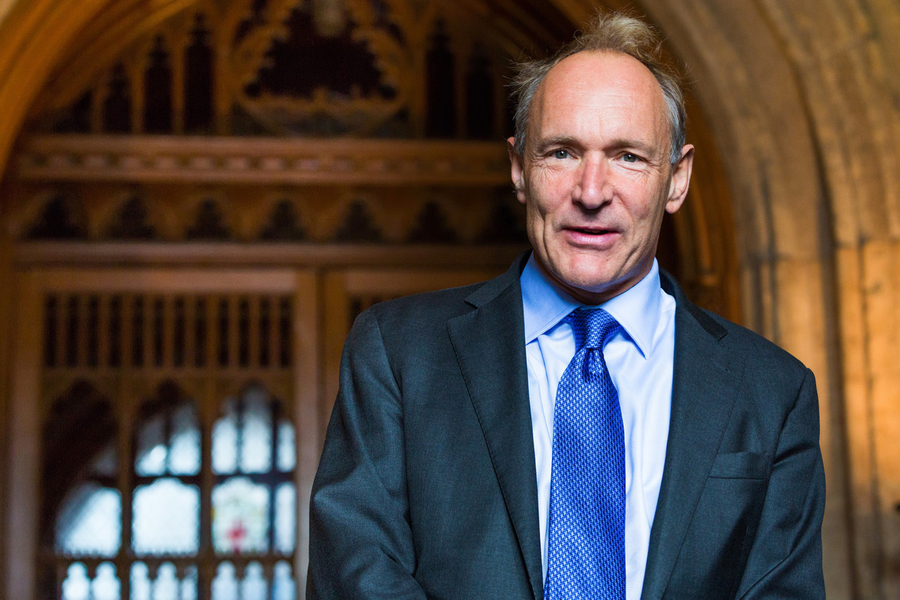

COMENTARIO INGENIERIA
Estudiante: Juan Jose Pinto
Clase: Progamacion de nuevas tecnologias
Profesor:Juan Pablo Franco Rubio
Universidad de la Sabana
INTRODUCCION
El comentario de ingenieria tiene el objetivo de describir y contar la historia de tres personas y destacar su importancia y aportes a la ingenieria,esas personas son:la persona conocida como el padre de la ciencia coputacional, Alan Turing,el inventor de la red mundial de informacion,Time Berners-Lee y tambien la conocida computadora humana que lograba hacer calculos a velocidades increibles, Katherine G. Johnson
Katherine G. Johnson
Katherine Johnson es una mujer estadounidense nacida en West Virginia el 26 de agosto de 1918.
En base a lo visto en la pelicula "Figuras ocultas" la cual es capaz de mostrar el proceso de vida que ella llevo,su carreracomo profesional tuvo un giro importante al unirse al Comite Asesor Nacional Para la Aeronautica,que luego seria conocido como NASA.La meta que tenia en su tarabajo era el de lograr llevar a un hombre a la orbita que este regresara a la tierra de manera segura,ella fue una pieza importante para su equipo de trabajo debido a la gran habilidad que tenia en matematicas y resolviendo ecuaciones complejas en muy poco tiempo, gracias al desempeno que demostraba logro avanzar en sus metas ignorando las criticas que recibia al ser una mujer afro-americana,pese a todo esto ella fue la encargada de calcular la trayectoria del vuelo del primer estadounidense en viajar al espacio(Alan Shepard) como tambien la del Apolo 11 (viaje a la luna en el ano 1969),esos son los logros mas destacables en su carrera, se retira de la Nasa en 1986 a la edad de 68 anos,dejando un legado historico.

Alan Turing
Alan Turing es una de las personas más conocidas del siglo XX. Fue un matemático, lógico, criptoanalista e informático británico que realizó importantes contribuciones a los campos de la inteligencia artificial, la probabilidad y los sistemas de control.
En base a la pelicula "El codigo Enigma" El trabajo de Turing en el código Enigma ayudó a acortar la guerra en al menos un año porque pudo proporcionar a la inteligencia británica información sobre los planes militares alemanes antes de que pudieran implementarlos,pese a todos sus logros,En 1952, Turing fue condenado por homosexualidad y posteriormente se sometió a un tratamiento hormonal para cambiar su orientación sexual. Murió a los 47 años en 1954 por envenenamiento con cianuro como resultado de un aparente suicidio.

Tim Berners-Lee
Tim Berners-Lee es un científico informático británico mejor conocido por inventar la World Wide Web en 1989. También se le conoce como "el padre de Internet" y "el padre de la Web". Berners-Lee es un caballero, oficial del ejército real británico, por su trabajo con la tecnología de la información. También recibió la Medalla Presidencial de la Libertad, un premio estadounidense que reconoce el servicio destacado a los Estados Unidos por parte de ciudadanos extranjeros. Además, Berners-Lee ha sido nominado varias veces al Premio Nobel de la Paz, la más reciente en 2010.
Berners-Lee fue nombrado caballero en 2005 por sus servicios a las comunicaciones globales y la ciencia británica, ¡dos cosas en las que ha estado involucrado desde que ayudó a crear tecnologías web mundiales 20 años antes de lo esperado! Para conmemorar esta ocasión, Google nombró uno de sus autobuses en su honor, celebrando las contribuciones de Sir Tim hacia la comunicación global a través de la tecnología. Además de ser nombrado caballero por la propia reina Isabel II, Sir Tim ha recibido varios premios internacionales, incluido el premio Legion d'honneur de Francia, que reconoce el servicio destacado de ciudadanos extranjeros a Francia. A pesar de estos elogios, Sir Tim aún dirige Creative Commons UK, que otorga licencias de contenido creativo en todo el mundo en condiciones de fácil acceso para que los creadores reciban una compensación justa por su trabajo.

Opionion
En mi opinion durante el tema visto,puedo decir que el ser humano ha demostrado que mediante medios como la ingenieriay la informatica sirven para un desarrollo social ya que es gracias a esto que mediante el uso de esos conocimientos nacen soluciones practicas a las necesidades y problematicas que presentan la sociedad y el planeta en la actualidad.
Tambien cabe recalcar que las personas estudiadas son destacadas por la implementacion de sus conocimientos en principalmente el area de la informatica,y hoy dia habiendo nuevas problematicas y una tecnologia mas avanzada,esto ya no solo se queda en unas areas en especifico,sino que puede llegar a ayudar y facilitar tareas en campos como la salud,construccion,etc...
y yo pienso que esto en el futuro traera muchos mas beneficios para la humanidad.